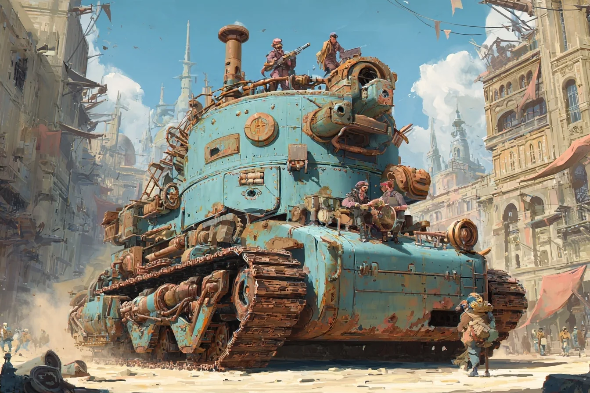

BOILERHEART II: Cranky Engines is an open-world sandbox. Your crew lives inside a thinking war-tank that was raised on poetry and opera, and it never lets you forget it. You drive through a post-apocalyptic world of factions, trade in towns, take missions, fight, repair, and keep your dramatic engine happy enough to carry on.
This page is the current plan. It changes as we build, test and vote. The original sales pitch stays as it was: read the pitch. What is actually built: Where we are.

Why we are making it
- A curriculum, not just a project. Our earlier games were five-minute arcade games for expos. This one should still be fun after six months of work and keep growing for two or three years. A three-week class project adds something permanent to the world.
- Something for every student to own: a faction, a town, a room in the tank, an engine's personality.
- A game we would go home and play, not a demo that is only fun on a stand.
- Something to say about AI. The engines are funny, flawed characters: a comment on real AI, made with real AI.
The world
- The machines lost. After a war against humanity, AI was put on a strict diet: a thinking engine may learn from anything except technical material. Poetry, plays, novels, paintings, war stories. So engines can't repair themselves, they need human crews, and every one of them is a drama queen. "I cannot possibly climb that hill. I am in mourning. For the hill."
- The plague generations. The machines' last attack was viral. Four generations of pandemic taught everyone to fear outsiders, so arriving in a new town is tense and trade is careful.
- Everyone is a mutant. A cartoony cast with every body shape and no "default human".
Factions
Each faction has its own politics and its own art style. If a student loves steampunk, they build the steampunk faction; if another loves cyberpunk, there's a faction for that too. The list is open on purpose. The first four:
- The Brass Parliament (steampunk): a noisy democracy. Debates the attack for three hours, then votes.
- The Neon Collective (cyberpunk): everything is shared, even your tank's playlist.
- The Church of the Scroll (desert gothic): a theocracy whose holy scroll is the first two Lord of the Rings books.
- The Rolling Villages (solarpunk-ish): whole family clans living on their tanks.
Factions come after the prototype. Their looks will be colour palettes and textures over the same building pieces (skins and faction looks).
The tank
- It is your base: fortress, workshop, shared vault and home. It just happens to drive.
- It is huge, about four storeys: bigger than any real tank, more like mining machinery. You run beside it and climb onto it and into it.
- You build it yourself from floors, walls, sloped armour and other pieces on a 3 m grid, and you can walk around inside while it drives (the idea).
- It looks like fantasy, not a modern tank: turrets everywhere, and turrets you can swap (the idea).
- It has an inside: engine room, gun deck, navigator's table, bunks, workshop, vault, and the engine's heart chamber.
- The engine has a face in each faction's style: a brass opera mask that sighs steam, a crystal cortex, an illuminated manuscript, a tree growing through the hull.
What you do
Travel, arrive and trade, take a mission, fight or talk your way out, repair, push on. The survival stats live on the tank, not on you: hull, boiler pressure, coolant, fuel, oil, crew nerves, and the engine's Sanity. The engine is hooked on fancy oil and needs therapy, and one of the crew may be a traitor.
Because so much moved from the player to the tank, the player gets things the tank can't do: going into buildings, parkour, and maybe movement mods.
How AI is used in the game
- The Machine: the voice and character of your engine (the engine's brain).
- The Crew: living characters with their own minds.
- The Game Master: weaves missions from fragments.
A world our school keeps building
- A class builds a city. Three weeks, one town. Next time a dungeon. It all stays in the world.
- Visitors leave a nook: build a corner, go home, find it in the next update.
- Fun at 20%: one faction, one town, one tank and a few missions is already a game. Everything after that is growth.
- Convention arcade mode: five people crew one tank on a bench at an expo (the idea).
The road there
- Foundations: greybox tools, climbing, documents. Done.
- A working prototype in greybox: one test level, from one village to the next, attacked on the way. Players, tank, combat, repair, crafting, inventory, parkour, loot, tank damage, NPC tanks, engineers, civilians, a quest giver and a shopkeeper. All placeholders. Then we ask: is this game worth making? Progress.
- If yes: real models and textures, the first faction, the tank's interior, a permanent map.
- A second faction: the real test of the idea. Can a new team add a new style without breaking the first?
- Year 2 and 3: more factions, class-built cities, visitor nooks, the arcade rig.
Multiplayer is built in from the start and tested every few weeks. We learned that the hard way on an earlier project.
Not decided yet
Some big choices belong to the students: multiplayer or solo with an AI crew, a fixed or a dynamic map, which faction first, and when to build the arcade rig. See Decisions.
What changed in this plan
- 2026 Oct 18: first version, from the pitch, the project's own vision document, and what we've built and decided since.